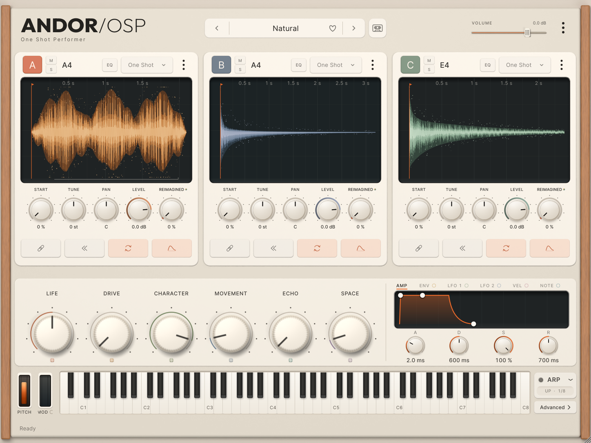

Every picture of the interface on this page is a render of the real code (ANDOR OSP's
editor and the shared components in shared/andor-ui), produced by the tests:
tests/plugin/DesignCaptureTests.inc (ANDOR OSP) and
tests/support/VisualStates.h (ANDOR Example). Nothing here is a CSS or hand-drawn
recreation. This page's own frame, type and colours are documentation chrome only.
Zoom: 100 % shows one render pixel per CSS pixel at reference size
(1448 × 1086). The three-layer state was rendered at 1×, 1.5× and 2×, so each zoom shows a real
render at that scale. Other states are 1× renders; above 100 % they are enlarged
(marked 1× enlarged). Component crops are 2× renders: 100 % shows them
at reference size, 200 % pixel for pixel.
The reference instrument (ANDOR OSP, three layers)

03-three-layers, real renders at 1×, 1.5× and 2× (the zoom picks the matching one). Shown: housing with teak rails, header, three triple cards, the macro row with lenses, the modulation panel, the keyboard row, ARP and Advanced.
States
Popovers
Components (2× crops)
A product built from the shell: ANDOR Example
ANDOR Example was written by tools/create_andor_instrument.py and builds as its own
plugin (plugin code Aexm). It plays through the shell's labelled diagnostic engine: a
plain resampler, or a test tone with no sound loaded. That engine reads only LEVEL, PAN, TUNE,
MUTE/SOLO, the AMP envelope, volume, fine tune, bend and velocity range, so every other control
is shown disabled in ANDOR OSP's own disabled look, and the footer says what it is.
Visual regression (ANDOR Example vs ANDOR OSP)
States compared
18 (all in tests/support/VisualStates.h)
Tolerance
0 (exact)
Masks (approved dynamic regions)
identity, preset name, status line
Differing pixels outside the masks
0 in every state (Linux, Xvfb; macOS: the CI artifact)